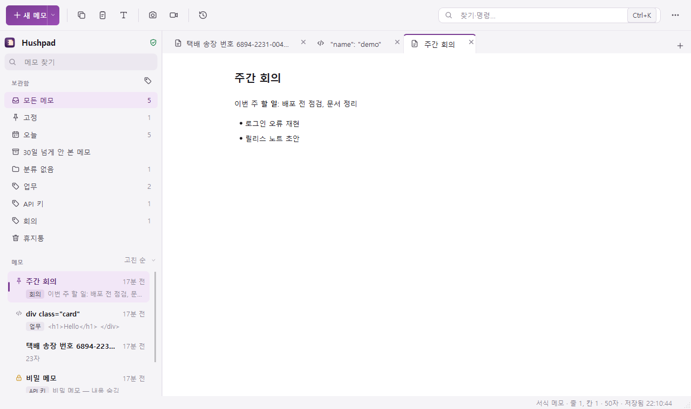
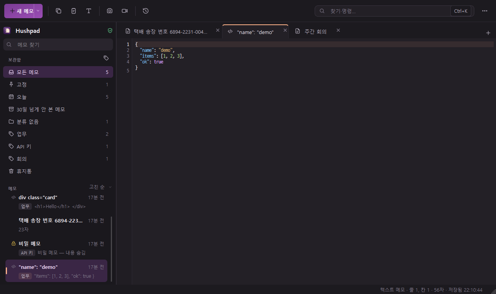

조용히 적고, 아무도 못 보게
저장 버튼 없이 바로 기록되고, 모든 메모는 암호화되어 한 폴더에 모입니다. 창은 스크린샷과 화면 공유에도 보이지 않아요. 암호·API 키·HTML·JSON·스크린샷까지 한곳에.


메모장을 이렇게 쓰고 있다면
저장 안 해도 남아 있는 탭이 편하지만, 쌓이기 시작하면 이야기가 달라집니다.
가볍지만 꼭 필요한 것만
Windows 메모장처럼 바로 쓰고, 메모장이 못 하던 일을 조용히 해 줍니다.
저장 버튼이 없어요
쓰는 순간 자동 저장. 이름을 안 정해도 만든 날짜·시각으로 정리되고, 모든 메모가 한 폴더에 모여요.
모든 메모를 암호화
파일을 열어 봐도 알아볼 수 없어요. 다른 프로그램·검색 색인·클라우드가 내용을 읽지 못합니다.
캡처에 보이지 않는 창
스크린샷·화면 녹화·화상회의 화면 공유에 Hushpad 창이 찍히지 않아요. 내 눈에만 보입니다.
서식 그대로, 또는 글자만
웹에서 복사한 서식을 그대로 붙이고, 내보낼 때는 Ctrl+Shift+C 한 번이면 글자만. 두 버전을 늘 함께 가지고 있어요.
HTML·JSON 급할 때
코드 메모는 줄 번호·색 구분·자동 들여쓰기, JSON 정리 한 번에. KEY=값 줄에서 값만 복사도 돼요.
스크린샷·짧은 녹화
어디서든 Ctrl+Alt+S 영역 캡처, Ctrl+Alt+R 화면 녹화. 결과는 메모에 바로 들어가고 동영상도 암호화돼요.
분류·합치기·휴지통
끌어다 분류하고, 여러 메모를 하나로 합치고, 지운 메모는 휴지통에서 되살려요. 오래 안 본 메모만 모아 정리도.
내 PC 여러 대에서
보관 폴더를 Dropbox·OneDrive 안에 두면 같은 암호로 다른 PC에서도 열려요. 메모 하나가 파일 하나라 충돌이 적어요.
Ctrl+K 하나로
메모 제목·내용과 모든 기능을 한 칸에서 찾아 Enter로 실행. 클립보드를 바로 메모로 저장하는 Ctrl+Alt+M도 있어요.
내 화면에는 보이고, 캡처에는 없어요
화면 공유 중에 메모를 띄워 놓아도, 스크린샷을 찍어도 Hushpad 창 자리는 그 뒤 화면으로 채워집니다. 그래서 창을 치우지 않고 그대로 캡처 버튼을 눌러도 돼요.
- 스크린샷·녹화 도구, 화상회의 공유Windows의 캡처 제외 기능(Windows 10 2004 이상)을 씁니다.
- 녹화 중 버튼도 찍히지 않아요녹화 영역 테두리와 ⏸·⏹ 막대는 화면에만 보입니다.
- 필요하면 끌 수 있어요메모를 일부러 화면 공유할 때는 메뉴에서 한 번에 해제.
어떻게 지켜지나요
Hushpad는 서버가 없습니다. 메모는 내가 고른 폴더에만 있고, 그 안의 모든 파일은 암호화되어 있어요.
- AES-256-GCM 암호화메모·이전 버전·동영상·분류 이름까지 모두 암호화해 저장해요.
- 암호에서 만든 열쇠 (scrypt)암호를 모르면 파일을 풀 수 없어요. 암호를 잊으면 만든 사람도 되살릴 수 없습니다.
- 내 PC에서는 한 번만 입력열쇠를 Windows 계정에 묶어(DPAPI) 기억해요. 다른 계정·다른 PC에서는 다시 암호가 필요해요.
- 클립보드도 조용히복사한 내용은 Windows 클립보드 기록·클라우드 동기화에 남지 않게 표시해요.
- 계정·추적·인터넷 연결 없음앱도 이 홈페이지도 분석·광고 스크립트를 쓰지 않아요.
├─ vault.json — 암호로 감싼 열쇠
├─ notes\
│ ├─ 20261115-143205-a1b2.own
│ └─ 20261115-151740-9c0e.own
├─ history\ — 이전 버전
└─ media\ — 녹화한 동영상
$ type notes\20261115-143205-a1b2.own
OWN1 ▒▓░▒█▓░▒▓▒░█▓▒░▓█▒░▒▓█░▒▓░█▒▓
# 열어 봐도 이렇게만 보여요
손에 익는 단축키
창이 닫혀 있어도(트레이) 동작하는 단축키가 있어요.
자주 묻는 질문
Windows 메모장에 열어 둔 탭을 옮길 수 있나요?
네. 메뉴 › 파일 › “Windows 메모장 탭 가져오기”로 저장하지 않은 탭까지 복사해 옵니다. Windows 메모장 쪽은 건드리지 않아요.
암호를 잊으면 어떻게 되나요?
되살릴 방법이 없습니다. 암호를 모르면 아무도(만든 사람도) 열 수 없게 만든 것이라서요. 처음 정할 때 안전한 곳에 적어 두세요.
여러 PC에서 함께 쓰려면?
보관 폴더를 Dropbox·OneDrive 같은 동기화 폴더 안에 두고, 다른 PC에서 같은 폴더를 고른 뒤 같은 암호를 넣으면 됩니다. 다른 PC에서 고친 내용은 몇 초 안에 반영되고, 양쪽에서 동시에 고치면 한쪽을 “충돌 사본”으로 따로 남겨요.
이미지나 동영상도 넣을 수 있나요?
서식 메모에는 이미지를 붙여 넣거나 끌어다 놓을 수 있고, 스크린샷과 짧은 화면 녹화(최대 3분)도 바로 들어갑니다. 동영상은 앱 안에서 재생되고 암호화되어 저장돼요.
인터넷에 무언가를 보내나요?
아니요. Hushpad는 계정도 서버도 없고, 실행 중에 인터넷에 연결하지 않습니다.
어디서 받나요?
정식 버전은 GitHub에 공개해서 배포합니다. 이 홈페이지의 다운로드 페이지에서 바로 받을 수 있어요.